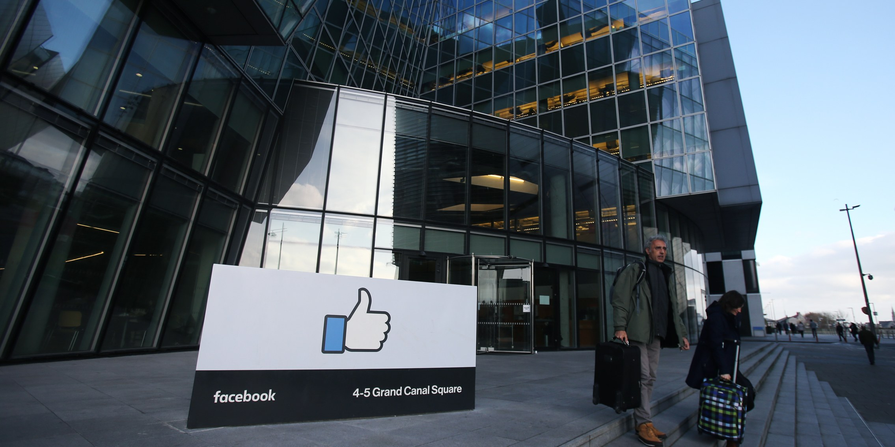
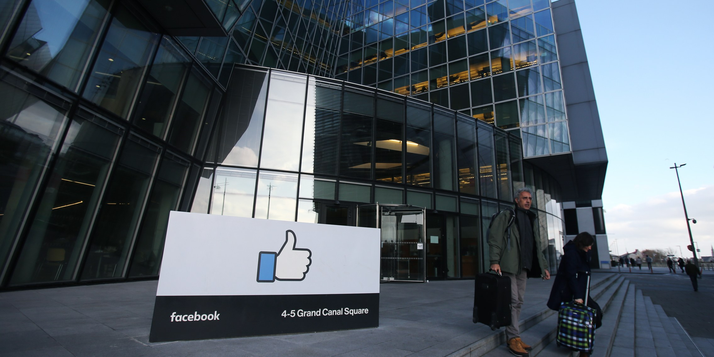

JHONCODE
Facebook, Inc. is an American online social media and social networking service company based in Menlo Park, California. It was founded by Mark Zuckerberg, along with fellow Harvard College students and roommates Eduardo Saverin, Andrew McCollum, Dustin Moskovitz and Chris Hughes. It is considered one of the Big Four technology companies along with Amazon, Apple, and Google. The founders initially limited the website's membership to Harvard students and subsequently Columbia, Stanford, and Yale students. Membership was eventually expanded to the remaining Ivy League schools, MIT, and higher education institutions in the Boston area, then various other universities, and lastly high school students. Since 2006, anyone who claims to be at least 13 years old has been allowed to become a registered user of Facebook, though this may vary depending on local laws. The name comes from the face book directories often given to American university students. Facebook held its initial public offering (IPO) in February 2012, valuing the company at $104 billion, the largest valuation to date for a newly listed public company. Facebook makes most of its revenue from advertisements that appear onscreen and in users' News Feeds.
 
